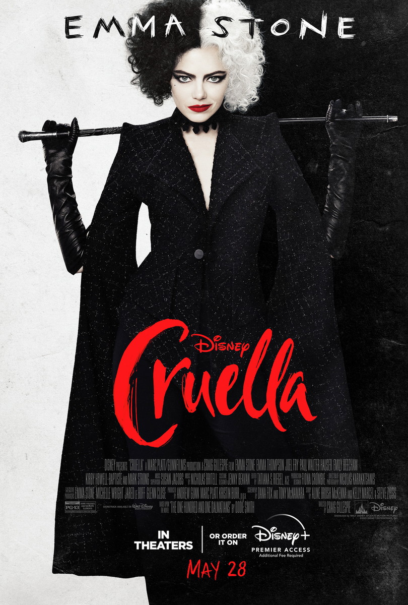
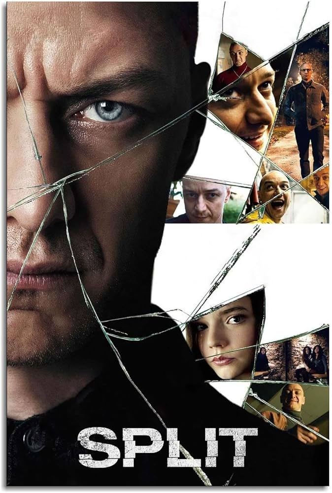
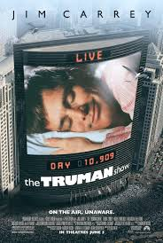
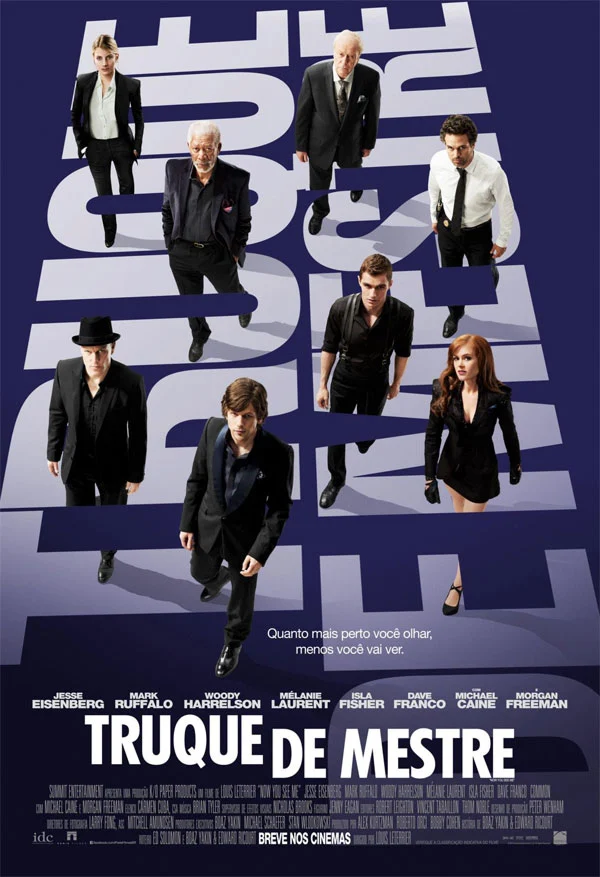

Galeria de Filmes
Conheça meus filmes preferidos!
Bem-vindo à galeria de filmes de Laura Longuinho, onde você encontrará uma seleção de histórias envolventes e emocionantes, prontas para transportar você a mundos diferentes. Da rebeldia e transformação de Cruella ao mistério psicológico de Fragmentado, cada filme oferece uma experiência única, explorando desde o amor e os dilemas sociais em Ricos de Amor até os jogos de percepção e realidade em O Show de Truman e Truque de Mestre. Prepare-se para mergulhar em enredos repletos de suspense, reviravoltas e personagens inesquecíveis. Escolha sua próxima aventura cinematográfica e aproveite a jornada!

Cruella
(2021) Ambientado na Londres dos anos 1970, Cruella narra a origem de uma das vilãs mais icônicas da Disney, a Estella, uma jovem fashionista com um talento para o design e um espírito rebelde. Ao longo de sua jornada, ela desenvolve uma rivalidade com a aristocrática baronesa von Hellman, enquanto sua transformação em Cruella De Vil começa a ganhar forma, em meio a intrigas e um estilo de vida extravagante, questionando até onde ela vai para alcançar a fama e o sucesso no mundo da moda.

Fragmentado
(2016) Fragmentado acompanha a história de Kevin, um homem com 23 personalidades distintas, que sequestra três adolescentes. A trama explora o conflito interno entre suas identidades múltiplas e o surgimento de uma nova personalidade, a mais perigosa de todas, chamada "A Fera". A história, repleta de suspense psicológico, desafia os limites da mente humana enquanto as jovens tentam escapar do cativeiro.

Ricos de Amor
(2020) Em Ricos de Amor, Teto, um jovem herdeiro de uma grande fortuna, se apaixona por Paula, uma ativista que inicialmente o vê apenas como mais um rico mimado. Ao tentar conquistá-la, ele esconde sua verdadeira identidade e finge ser um simples trabalhador, até que as mentiras começam a se complicar, revelando os desafios de conciliar amor e as diferenças sociais.

O Show de Truman
(1998) O Show de Truman narra a vida de Truman Burbank, um homem que, sem saber, vive em um cenário controlado por câmeras de televisão 24 horas por dia. Desde o nascimento, ele é o protagonista de um reality show global, com sua realidade manipulada por produtores. À medida que Truman começa a perceber as inconsistências ao seu redor, ele busca descobrir a verdade sobre sua vida e o mundo que o cerca.

Truque de Mestre
(2013) Truque de Mestre segue um grupo de ilusionistas, conhecidos como "Os Quatro Cavaleiros", que realizam assaltos ao estilo de seus truques de mágica, roubando grandes fortunas durante suas apresentações. O FBI e um ex-ilusionista os perseguem, tentando descobrir como eles fazem os roubos, enquanto os Cavaleiros manipulam a percepção das autoridades em um jogo de inteligência e astúcia.
Retornar ao topo